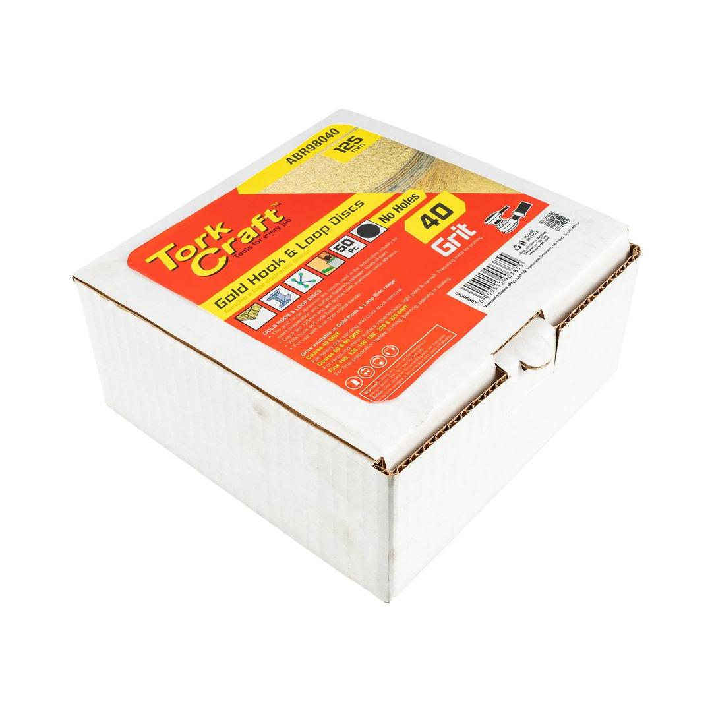

ABR98040


Grit: 40
Diameter: 125mm
This product features 50 high-quality gold discs designed for superior sanding performance. Each disc measures 125mm in diameter and utilizes a 40-grit abrasive for efficient material removal and surface preparation. These discs are designed without a center hole, making them compatible with hook and loop backing pads for easy attachment and removal.
The gold coating provides excellent durability and heat resistance, ensuring consistent performance throughout the sanding process. Ideal for various applications including wood, metal, and other materials, these discs offer a cost-effective solution for achieving smooth and professional finishes.
Application: